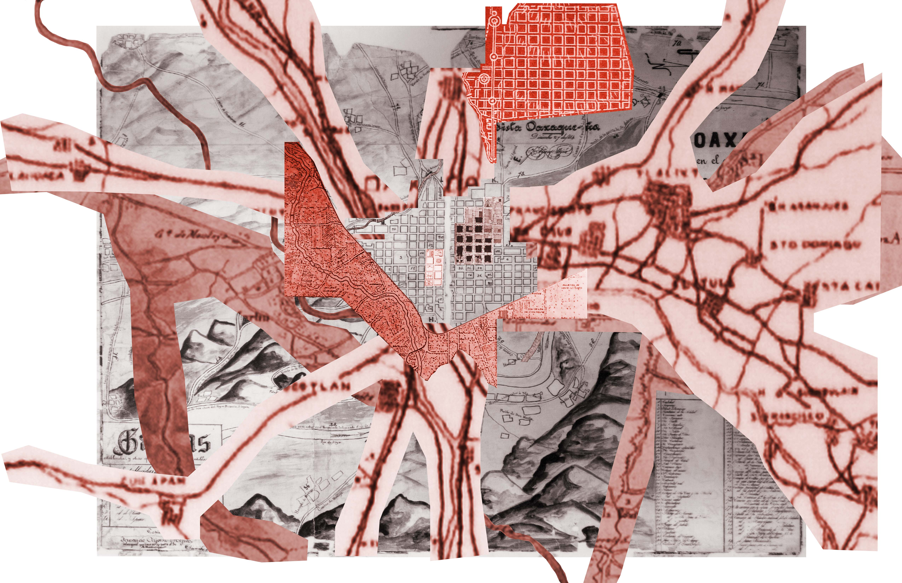
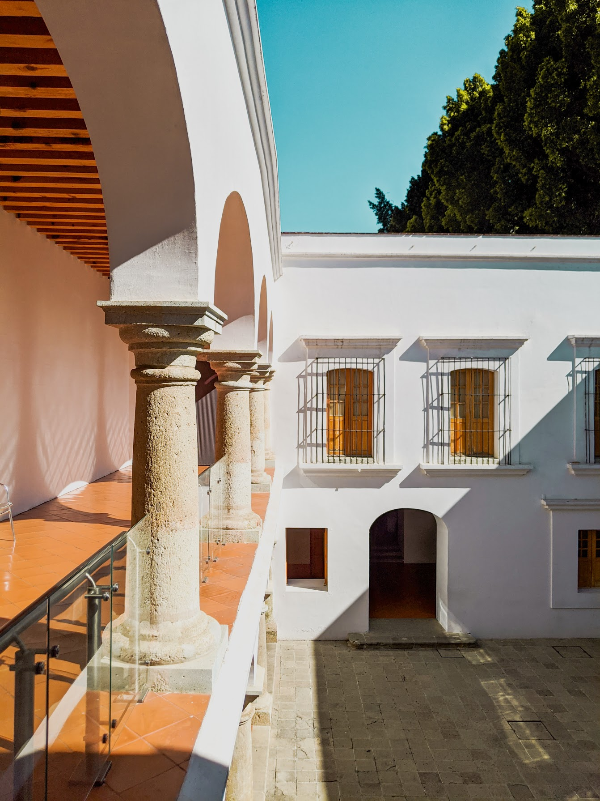
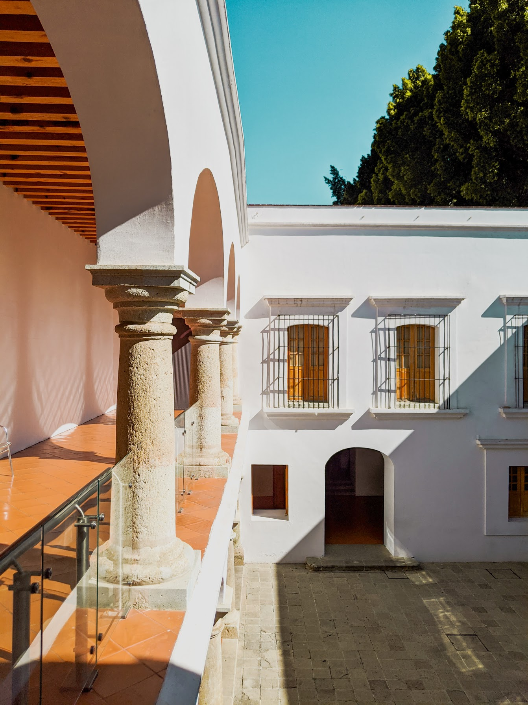
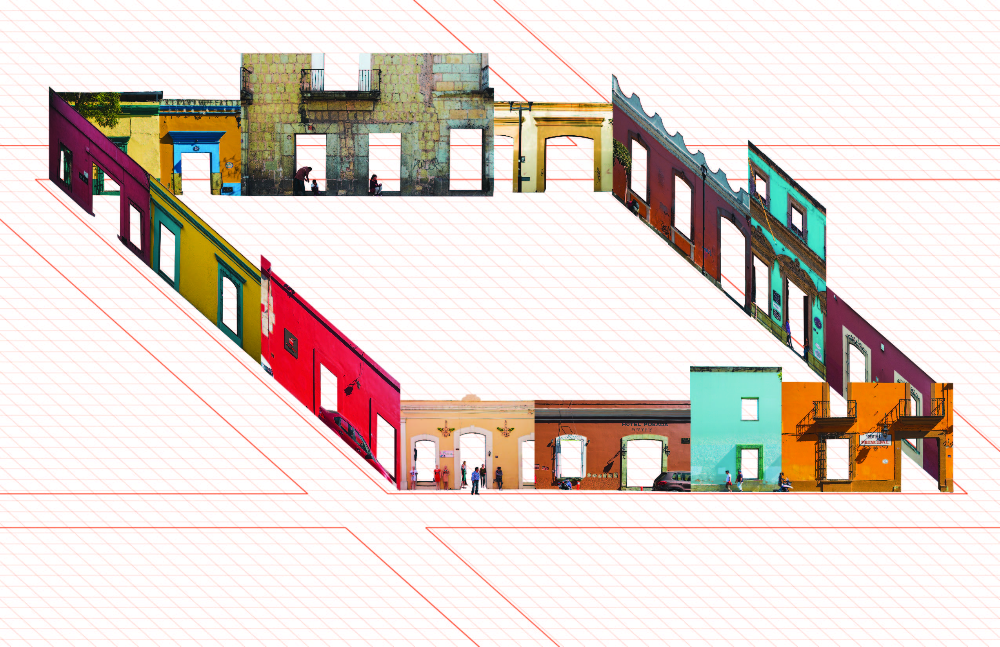
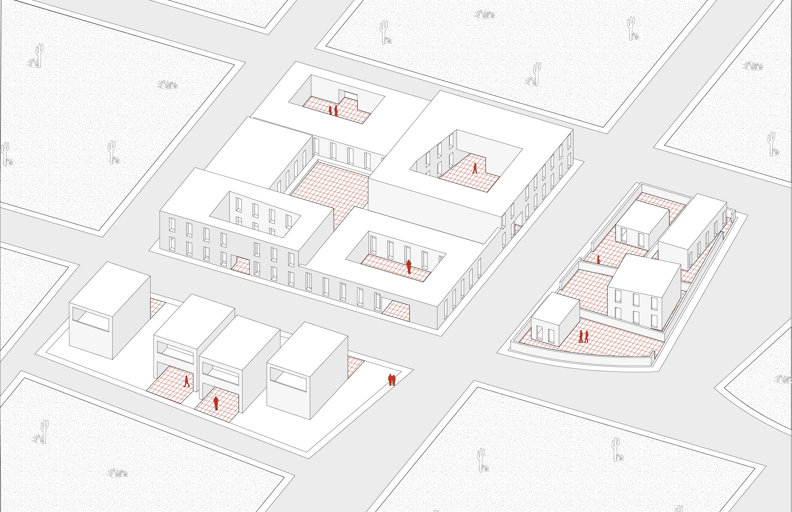
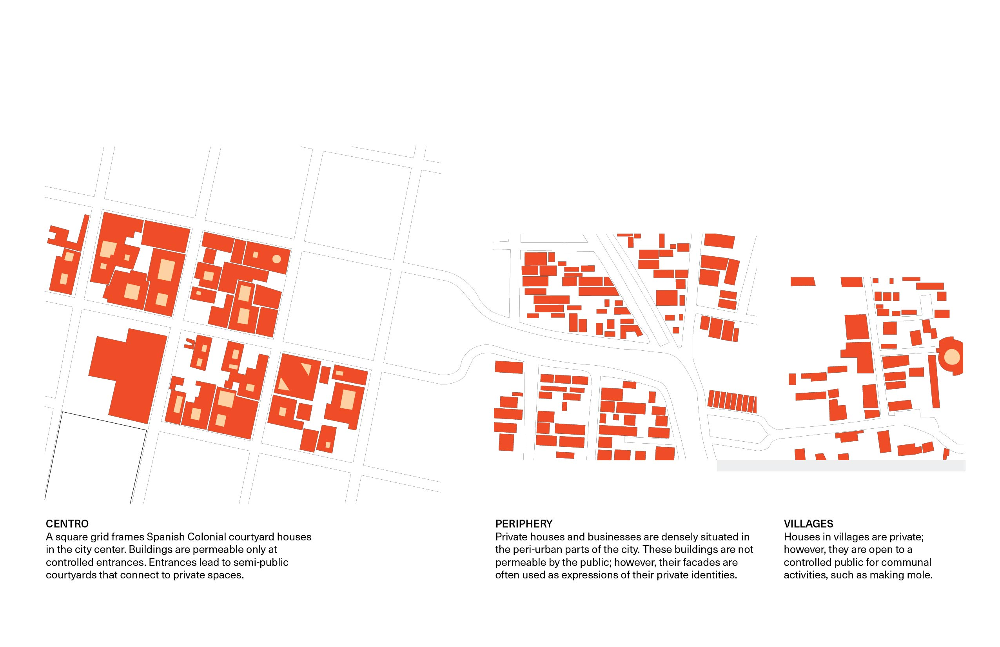
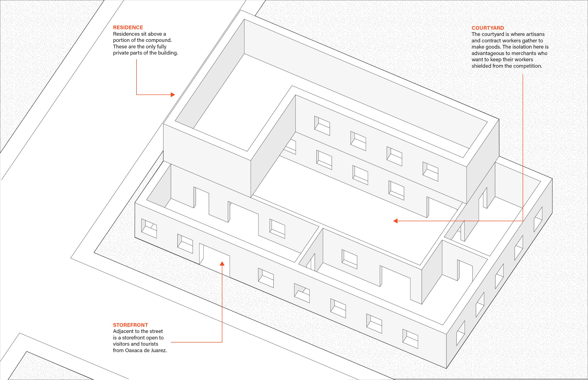
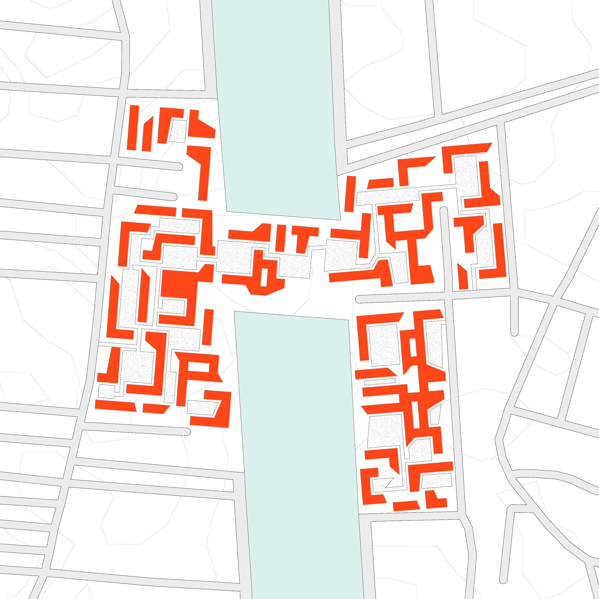
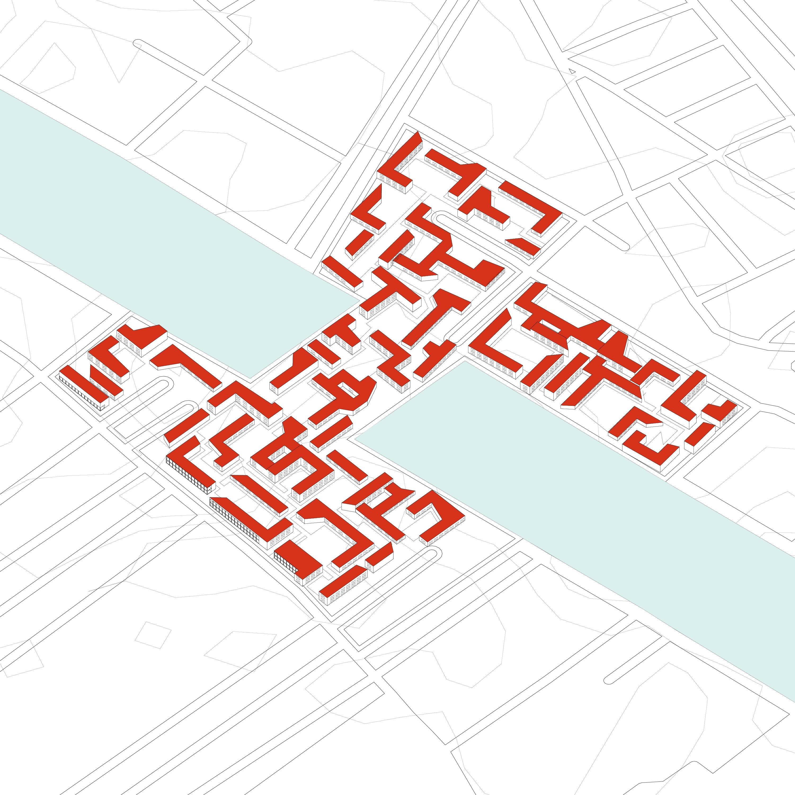

This project was a self-initiated month-long investigation on systems of societal exclusion in Oaxaca de Juarez and its surroudning areas. I began by understanding migration patterns and city block typologies in the Oaxaca area. Using these, and backed by essays and studies, I was able to design a prototype for inclusive housing systems. These systems were derived from existing successful factors. Rather than being sited in place, the diagrams are meant to be used as models displaying how an exclusive landscape can be overcome.



 








Several architectural and urban conditions in Oaxaca and its surroundings can be used to design inclusive housing systems.
– the courtyard, a semi-public space in the Centro neighborhood that feels inviting to the public. It is a medium between private and public, allowing a space of relief from the street that does not infringe on living spaces;
– live-work buildings in the villages, where there is retail in the front, workspaces in the courtyards and back, and living quarters above;
– two-floor buildings where multiple programs can coexist vertically.
The diagrammatic plan here shows how housing can be arranged in a way that is conducive to bridging between neighborhoods and to new development. Rather than have closed off front facades in single-family buildings, this housing draws on the iconic and inclusive courtyard typology that is prevalent in Centro and village neighborhoods. The basin is bridged over at this point to connect two neighborhoods that might not otherwise integrate.

